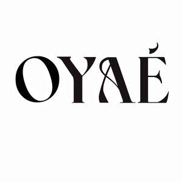

Trade Mark Journal No.2025/030 25 July 2025
UK00004235054 16 July 2025 (3,5,35)

- Class 3
- Skincare cosmetics; Anti-aging skincare preparations; Anti-aging moisturizers used as cosmetics; Skincare preparations; Moisturisers [cosmetics]; Skin moisturizers used as cosmetics; Anti-aging moisturizers; Anti-ageing moisturiser; Suncare lotions [for cosmetic use]; Cosmetic moisturisers; Anti-ageing creams [for cosmetic use]; Cosmetic products in the form of aerosols for skincare; Moisturising skin lotions [cosmetic]; Beauty serums; Anti-aging creams [for cosmetic use]; Acne cleansers, cosmetic; Non-medicated skincare preparations; Facial moisturisers [cosmetic]; Skin cleansers [cosmetic]; Suncare lotions; Moisturising skin creams [cosmetic]; Beauty serums with anti-ageing properties; Facial creams [cosmetics]; Anti-aging creams; Anti-ageing creams; Skin moisturisers; After-sun oils [cosmetics]; Anti-ageing serums for cosmetic purposes; Skin care lotions [cosmetic]; Beauty lotions; Skin care cosmetics; Skin moisturizer; Skin moisturiser; Skin moisturizers; Skin balms [cosmetic]; After-sun lotions [for cosmetic use]; Cosmetic creams for skin care; Moisturisers; Beauty care cosmetics; Skin care creams [cosmetic]; Skin recovery creams [cosmetics]; Cosmetic creams for the skin; Skin creams [cosmetic]; Skin creams [for cosmetic use]; Cosmetics; Facial cleansers [cosmetic]; Anti-wrinkle creams [for cosmetic use]; Sunscreen creams [for cosmetic use]; Cosmetic nourishing creams; Skin masks [cosmetics]; Moisturiser; Skin cleansers; Self-tanning preparations [cosmetics]; Moisturizers; Cleansing creams [cosmetic]; Skin moisturizer masks; Anti-ageing serum; Hairstyling serums; Facial lotions [cosmetic]; Cosmetic facial lotions; Exfoliants for the care of the skin; Body and facial creams [cosmetics]; Exfoliants for the cleansing of the skin; Non-medicated skin serums; Cosmetic creams and lotions; Skin care oils [cosmetic]; Facial moisturizers; Moisturising body lotion [cosmetic]; Hair care lotions [for cosmetic use]; Beauty balm creams; Anti-aging serum for cosmetic use; Beauty creams; Skin lotions; Lotions for the skin; Skin fresheners [cosmetics]; Sunscreens [for cosmetic use]; Skin toners [cosmetic]; Skin cleansing lotion; Body creams [cosmetics]; Cosmetic massage creams; After-sun milks [cosmetics]; Skin whitening creams; Creams (Skin whitening -); Hair care creams [for cosmetic use]; Sunscreen [for cosmetic use]; Tanning oils [cosmetics]; Facial creams [for cosmetic use]; Sun care lotions [for cosmetic use]; Facial creams [cosmetic]; Skin make-up; Cosmetic hair lotions; Exfoliating creams; Suntan lotion [cosmetics]; Skin cleansers [non-medicated]; After-sun milk [cosmetics]; Skin whitening preparations [cosmetic]; Hair moisturisers; Creams for tanning the skin; Cosmetic products for the shower; Aromatherapy creams; Moisturizing creams; Skin cream [for cosmetic use]; Cosmetics for use in the treatment of wrinkled skin; Skin lotion; Anti-aging cream; Skin hydrators; Organic cosmetics; Creams (Cosmetic -); Cosmetic creams; Cosmetics for use on the skin; Night creams [cosmetics]; Aromatherapy lotions; Skin hydrators for cosmetic purposes; Cleansing lotions; Facial cleansers; After-sun lotions; Facial gels [cosmetics]; Hair care serums; Anti-wrinkle creams; Beauty creams for body care; Self-tanning preparations [cosmetic]; Anti-wrinkle cream [for cosmetic use]; Moisturising creams; Cosmetic preparations for skin firming; Cosmetic products in the form of aerosols for skin care; Exfoliant creams; Hair cosmetics; Cosmetics for suntanning; Skin creams; Creams for the skin; Moisturizing preparations for the skin; Colour cosmetics for the skin; Hair moisturizers; Facial lotions; Dermatological creams [other than medicated]; Hair shampoo; Hair shampoos; Hair relaxers; Hair dye; Hair pomades; Hair conditioner; Hair mousse; Hair serums; Hair lotion; Hair lotions; Hair balm; Hair balms; Hair tonic; Hair liquid; Styling paste for hair; Hair glaze; Hair and body wash; Hair rinses [for cosmetic use]; Hair glazes; Cosmetic preparations for the hair and scalp; Hair liquids; Wax treatments for the hair; Soap; Detergent soap; Deodorant soap; Soap (Deodorant -); Bath soap; Shower soap; Laundry soap; Soaps; Perfumed soap; Toilet soap; Antiperspirant soap; Soap (Antiperspirant -); Handmade soap; Bars of soap; Bar soap; Cosmetic soap; Skin soap; Waterless soap; Liquid soap for laundry; Soap products; Liquid bath soap; Carbolic soaps; Cakes of soap; Soap (Cakes of -); Saddle soap; Liquid soap for dish washing; Hand soap; Dish soaps; Beauty soap; Industrial soap; Bath soaps; Toilet soaps; Laundry soaps; Shaving soaps; Scented soaps; Cakes of toilet soap; Liquid soaps; Liquid soaps for laundry; Soap solutions; Cakes of soap for body washing; Perfumed soaps; Non-medicated toilet soaps; Cosmetic soaps; Liquid soap used in foot baths; Sponges impregnated with soaps; Soap free washing emulsions for the body; Non-medicated soaps; Facial soaps; Soaps for laundry use; Granulated soaps; Hand soaps; Foot perspiration (Soap for -); Soap for foot perspiration; Soaps in gel form; Soaps for toilet purposes; Soaps for household use; Cakes of soap for household cleaning purposes; Soaps in liquid form; Soaps for brightening textiles; Liquid soaps for hands and face; Soapy gels; Refill packs for hand soap dispensers; Washing-up detergent; Bath lotion; Shampoo; Soaps for body care; Pre-moistened towelettes impregnated with dishwashing detergent; Liquid laundry detergents; Shampoo bars; Powder laundry detergents; Cloths impregnated with a detergent for cleaning; Shaving lotion; Foaming bath gels; Nutritional creams (Non-medicated -); Perfumes; Fragrances; Oils for perfumes and scents; Perfumery and fragrances; Perfume; Aromatics for perfumes; Potpourris [fragrances]; Perfume oils; Liquid perfumes; Perfumes for ceramics; Aromatics for fragrances; Colognes; Extracts of perfumes; Scents; Fragrances for automobiles; Extracts of flowers [perfumes]; Flowers (Extracts of -) [perfumes]; Extracts of flowers being perfumes; Natural oils for perfumes; Musk [perfumery]; Fragrance sachets; Perfumes for cardboard; Perfumeries; Perfumery; Household fragrances; Perfumery products; Amber [perfume]; Solid perfumes; Deodorants for personal use [perfumery]; Cedarwood perfumery; Body deodorants [perfumery]; Perfume oils for the manufacture of cosmetic preparations; Body fragrances; Perfumed potpourris; Aftershave lotions; Aftershaves; Fumigation preparations [perfumes]; Cologne; Room perfume sprays; Ionone [perfumery]; Fragrance preparations; Room fragrances; Perfume water; Perfumed creams; Perfumed sachets; After-shave lotions; Fragrance emitting wicks for room fragrance; Essences for fragrancing; Fragrance refills for non-electric room fragrance dispensers; Scented oils; Synthetic perfumery; Fragrance sachets for eye pillows; Perfumed powders [for cosmetic use]; Perfumed powders; Vanilla perfumery; Synthetic vanillin [perfumery]; Aftershave balms; Perfumed lotions [toilet preparations]; Perfuming sachets; Ethereal oils for fragrancing; Scented body lotions and creams; Mint for perfumery; Scented body lotions; Scented sachets; Scented linen sprays; Geraniol for fragrancing; Scented water for fragrancing; Suntan oils [cosmetics]; Air fragrance preparations; Aftershave creams; Geraniol fragrancing compounds; Room perfumes in spray form; Perfumes for industrial purposes; Roll-on deodorants [toiletries]; Feminine deodorant sprays; Sachets for perfuming linen; Linen (Sachets for perfuming -); Pomanders [aromatic substances]; Peppermint oil [perfumery]; After-shave balms; Perfumed body lotions [toilet preparations]; Essential oils as perfume for laundry purposes; Natural perfumery; Aromatic potpourris; Eau de cologne [cologne water]; Fragrances for personal use; Incense sachets; Cosmetics in the form of lotions; Fragrant sachets; Air fragrance reed diffusers; Agarwood [incense]; Scented body creams; Eau de colognes; Aftershave; After-shave creams; Aloe vera preparations for cosmetic purposes; Toiletries; Non-medicated toiletries; Sponges impregnated with toiletries; Mousses [toiletries] for use in styling the hair; Douching preparations for personal sanitary or deodorant purposes [toiletries]; Non-medicated cosmetics and toiletry preparations; Toiletry preparations; Non-medicated toiletry preparations; Paper hand towels impregnated with cosmetics; Oils for toiletry purposes; Bath lotions (Non-medicated -); Shower creams; Bath powder [cosmetics]; Shampoos; Bath and shower gels; Soaps and gels; Non-medicated cosmetics; Bath and shower oils [non-medicated]; Shaving lotions; Non-medicated toothpaste; Scented linen water; Sunscreen lotions; Shower gels; Bath and shower gels, not for medical purposes; Non-medicated shampoos; Refill packs for cosmetics dispensers; Non-medicated hair lotions; Cosmetic preparations for bath and shower; Bath gels (Non-medicated -); Liquid bath soaps; Make-up palettes containing cosmetics.
- Class 5
- Pharmaceutical preparations for animal skincare; Pharmaceutical skin lotions; Moisturising creams [pharmaceutical]; Acne cleansers [pharmaceutical preparations]; Serums; Dermatological pharmaceutical products; Medicinal creams for skin care; Pharmaceutical products and preparations for hydrating the skin during pregnancy; Skin care lotions [medicated]; Antibiotic dermatological products; Acne creams [pharmaceutical preparations]; Moisturising body lotion [pharmaceutical]; Vitamin supplements; Dietary supplements; Nutritional supplements; Probiotic supplements; Herbal supplements; Homeopathic supplements; Flaxseed dietary supplements; Chlorella dietary supplements; Calcium supplements; Anti-oxidant supplements; Colostrum supplements; Protein supplements; Dietary supplements consisting of vitamins; Prebiotic supplements; Lecithin dietary supplements; Food supplements; Mineral dietary supplements; Zinc dietary supplements; Mineral nutritional supplements; Propolis dietary supplements; Acai powder dietary supplements; Liquid dietary supplements; Dietary and nutritional supplements; Nutraceuticals for use as a dietary supplement; Vitamin supplements for animals; Vitamin and mineral supplements; Protein dietary supplements; Linseed dietary supplements; Liquid nutritional supplements; Yeast dietary supplements; Casein dietary supplements; Liquid vitamin supplements; Enzyme dietary supplements; Dietary supplements for pets; Anti-oxidant food supplements; Dietary food supplements; Alginate dietary supplements; Albumin dietary supplements; Liquid herbal supplements; Flaxseed oil dietary supplements; Vitamin and mineral supplements for pets; Wheat dietary supplements; Dietary supplements for humans; Dietary supplements for infants; Pollen dietary supplements; Glucose dietary supplements; Vitamin and mineral food supplements; Protein powder dietary supplements; Dietary supplements in powder form; Mineral dietary supplements for animals; Nutritional supplements for veterinary use; Dietary supplements with a cosmetic effect; Medicated food supplements; Dietary supplements for medical use; Mineral dietary supplements for humans; Whey protein dietary supplements; Food supplements for sportsmen; Nutritional supplements consisting primarily of magnesium; Protein supplements for animals; Dietary supplements consisting primarily of magnesium; Vitamin supplement patches; Soy protein dietary supplements; Health-aid foods supplements containing ginseng; Health food supplements made principally of vitamins; Vitamin preparations in the nature of food supplements; Soy isoflavone dietary supplements; Dietary supplement drinks; Dietary supplements and dietetic preparations; Linseed oil dietary supplements; Nutritional supplements consisting of fungal extracts; Nutritional supplements consisting primarily of calcium; Brewer's yeast dietary supplements; Folic acid dietary supplements; Calcium tablets as a food supplement; Dietary supplements consisting primarily of calcium; Nutritional supplements consisting primarily of zinc; Dietary supplements for controlling cholesterol; Nutritional supplements for livestock feed; Nutritional supplements consisting primarily of iron; Herbal dietary supplements for persons special dietary requirements; Food supplements for veterinary use; Dietary supplements and dietetic preparations containing CBD oil; Dietary supplements consisting primarily of iron; Food supplements for dietetic use; Dietary supplements promoting fitness and endurance; Nutritional supplement energy bars; Multivitamins; Medicated supplements for animal feedstuffs; Dietary supplement drink mixes; Dietary food supplements used for modified fasting; Health food supplements made principally of minerals; Feed supplements for veterinary use; Mineral supplements for feeding livestock; Ganoderma lucidum spore powder dietary supplements; Food supplements for medical purposes; Medicated supplements for foodstuffs for animals; Activated charcoal dietary supplements; Zinc supplement lozenges; Fitness and endurance supplements; Food supplements in liquid form; Food supplements for non-medical purposes; Natural dietary supplements for treating claustrophobia; Protein supplement shakes; Wheat germ dietary supplements; Dietary supplements for pets in the nature of a powdered drink mix; Vitamin supplements for use in renal dialysis; Royal jelly dietary supplements; Ground flaxseed fiber for use as a dietary supplement; Antibiotic food supplements for animals; Pine pollen dietary supplements; Diet capsules; Health food supplements for persons with special dietary requirements; Dietary supplements for humans not for medical purposes; Food supplements consisting of amino acids; Nutritional supplement meal replacement bars for boosting energy; Powdered nutritional supplement drink mix; Dietary supplements for human beings; Fodder supplements for veterinary purposes; Vitamins and vitamin preparations; Dietary pet supplements in the form of pet treats; Preparations for supplementing the body with essential vitamins and microelements; Health-aid foods supplement containing red ginseng; Capsules for medicines; Multi-vitamin preparations; Nutritional supplements made of starch adapted for medical use; Food supplements consisting of trace elements; Powdered nutritional supplement energy drink mix; Powdered fruit-flavored dietary supplement drink mix; Delivery agents in the form of coatings for tablets that facilitate the delivery of nutritional supplements; Preparations of vitamins; Antioxidant pills; Dietary supplemental drinks; Multivitamin preparations; Vitamin tablets; Protein synthesis inhibitors; Human plasma protein; Blood protein fractions; Regulatory proteins for medical use; Fiber (Dietary -); Dietary fiber; Malt albumin for pharmaceutical use; Medicinal drinks; Drinks (Medicinal -); Vitamin drinks; Mineral drinks (Medicated -); Dietary and nutritional preparations; Dietetic and nutritional preparations; Dietetic foods for use in clinical nutrition; Nutritional additives to foodstuffs for animals, for medical purposes; Dietary supplements for animals; Nutritional drink mix for use as a meal replacement; Dietary fiber to aid digestion; Dietetic foods for medicinal purposes; Fibre (Dietary -); Dietary fibre; Anti-oxidants for dietary use; Bee pollen for use as a dietary food supplement; Dietetic foods adapted for medical purposes; Dietetic foodstuffs for medical purposes; Dietetic sweeteners for medical purposes; Dietetic food preparations adapted for medical purposes; Intravenous fluids used for rehydration, nutrition and the delivery of pharmaceutical preparations; By-products of the processing of cereals for dietetic or medical purposes; Dietetic foods adapted for medical use; Dietetic food adapted for medical use; Dietetic products for medical purposes; Medicine tonics; Medicinal herb extracts; Extracts of medicinal herbs; Herbal extracts for medical purposes; Therapeutic creams [medical]; Tonics for medical use; Medicinal oils; Oils (Medicinal -); Pharmaceutical drugs; Pharmaceutical creams; Bathroom deodorants; Medicated toiletry preparations; Sanitary towels; Towels (Sanitary -); Deodorants for clothing; Deodorants for clothing and textiles; Clothing (Deodorants for -) and textiles; Textiles (Deodorants for clothing and -); Toilet deodorants; Deodorants for textiles.
- Class 35
- Wholesale services in relation to dietary supplements; Retail services in relation to dietary supplements; Online advertising; Online marketing; Online advertisements; Online advertising services; On-line advertising; Providing a searchable online advertising guide featuring the goods and services of other on-line vendors on the internet; Providing a searchable online advertising guide featuring the goods and services of online vendors; Online advertising on computer networks; Online advertising on a computer network; Online business networking services; Online retail services relating to cosmetics; Trade information; Trade marketing [other than selling]; Foreign trade consultancy services; Export and import agencies; Import and export agencies; Import and export agency services; Provision of business information via global computer networks; Import and export services; Import and export agencies services; Import agency services; Export promotion services; Export agency services; Goods import-export agencies; Wholesale services in relation to foodstuffs; Provision of foreign trade information; Foreign trade information (Provision of -); Wholesale services in relation to domestic electrical equipment; Procuring of contracts for the purchase and sale of goods; Provision of an online marketplace for buyers and sellers of goods and services; Provision of an on-line marketplace for buyers and sellers of goods and services; Providing online marketplaces for sellers of goods and or services; Business and market research; Market surveys; Market research; Providing market intelligence services; Market forecasting; Online retail store services relating to cosmetic and beauty products; Market canvassing; Business management of insurance agencies and brokers on an outsourcing basis; Market research services regarding customer loyalty; Online community management services; Market analysis services relating to the availability of goods; On-line trading services in which seller posts products to be auctioned and bidding is done via the Internet; Online retail services in relation to downloadable virtual footwear; Business management of wholesale and retail outlets; Business intermediary services; Market analysis and research services; Market research and analysis services; Advertising services for the promotion of e-commerce; Business marketing services; On-line auction bidding for others; Online retail store services in relation to clothing; On-line advertising and marketing services; Provision of online price comparison services; Provision of on-line business and commercial information; Chamber of commerce services for the promotion of trade; Online retail services relating to toys; Market study and analysis of market studies; Business brokerage services; Business management of wholesale outlets; Advertising of the services of other vendors, enabling customers to conveniently view and compare the services of those vendors; Wholesale ordering services; Wholesale services in relation to bags; Wholesale services in relation to clothing; Wholesale services in relation to meats; Wholesale services relating to clothing; Wholesale services relating to candy; Wholesale services in relation to tableware; Wholesale services in relation to toys; Wholesale services in relation to beer; Wholesale services in relation to teas; Wholesale services in relation to stationery supplies; Wholesale services in relation to lubricants; Wholesale services in relation to threads; Wholesale services in relation to baked goods; Mail order retail services for cosmetics; Wholesale services in relation to footwear; Wholesale services in relation to seafood; Wholesale services relating to furs; Wholesale services relating to automobile accessories; Wholesale services in relation to furnishings; Wholesale services in relation to cutlery; Wholesale services in relation to toiletries; Wholesale services in relation to luggage; Wholesale services relating to automobile parts; Wholesale services in relation to educational supplies; Wholesale services in relation to art materials; Wholesale services in relation to printed matter; Wholesale services in relation to dietetic preparations; Wholesale services in relation to preparations for making beverages; Wholesale services in relation to sanitation equipment; Wholesale services in relation to works of art; Wholesale services in relation to kitchen appliances; Wholesale services relating to electronic household appliances; Wholesale services in relation to computer software; Mail order retail services for clothing; Retail services in relation to fashion accessories; Retail services in relation to stationery supplies; Mail order retail services connected with clothing accessories; Retail services in relation to alcoholic beverages (except beer); Marketing research in the fields of cosmetics, perfumery and beauty products; Marketing; Advertising and marketing; Advertising and marketing consultancy; Promotional marketing; Influencer marketing; Advertising and marketing services; Product marketing; Affiliate marketing; Marketing consultancy; Marketing consulting; Digital marketing; Advertising, marketing and promotion services; Marketing, advertising and promotion services; Advertising, marketing and promotional services; Advertising, promotional and marketing services; Marketing, advertising, and promotional services; Marketing research; Internet marketing; Marketing services; Business marketing consultancy; Marketing forecasting; Referral marketing; Marketing studies; Marketing information; Promotion, advertising and marketing of on-line websites; Direct marketing; Planning of marketing strategies; Direct marketing consulting; Consultancy services relating to advertising, publicity and marketing; Dissemination of advertising, marketing and publicity materials; Marketing research services; Event marketing; Marketing assistance; Research services relating to advertising and marketing; Marketing management advice; Database marketing; Promotion [advertising] of business; Business marketing consulting services; Development of marketing concepts; Marketing plan development ; Advertising, marketing and promotional consultancy, advisory and assistance services; Consultancy services in the field of affiliate marketing; Copywriting for advertising and promotional purposes; Direct marketing services; Marketing analysis services; Advice in the field of business management and marketing; Modeling for advertising or sales promotion; Consultancy relating to marketing; Creative marketing plan development services; Promotional marketing services using audiovisual media; Modelling for advertising or sales promotion; Business marketing consultation services; Modeling services for advertising or sales promotion; Recruitment services for sales and marketing personnel; Consultancy regarding advertising communications strategy; Marketing advisory services; Development of marketing strategies and concepts; Planning services for marketing studies; Business advice relating to strategic marketing; Consulting services in the field of Internet marketing; Marketing research and analysis; Marketing research or analysis; Providing marketing consulting in the field of social media; Business advice relating to marketing; Marketing (Business advice relating to -); Marketing consultation services; Preparation of marketing surveys; Advertising and marketing services provided by means of social media; Consumer profiling for commercial or marketing purposes; Professional consultancy relating to marketing; Advertising; Advertising and marketing services provided via communications channels; Analysis of marketing trends; Market research and marketing studies; Business consultancy services relating to the marketing of fund raising campaigns; Providing business marketing information; Advertising planning; Brand creation services (advertising and promotion); Developing promotional campaigns for business; Consulting services relating to marketing; Publicity and sales promotion services; Advertising and marketing services provided by means of blogging; Providing advice in the field of business management and marketing; Copywriting; Marketing in the framework of software publishing; Advertising and promotion services; Information or enquiries on business and marketing; Consultancy relating to demographics for marketing purposes; Advertising research; Consultancy regarding advertising communication strategies; Marketing services in the field of travel; Rental of all publicity and marketing presentation materials; Publicity and sales promotion; Advertising and promotional services; Promotional and advertising services; Promotional advertising services; Advertising and publicity; Publicity and advertising; Conducting of marketing studies; Conducting marketing studies; Advertising and publicity services; Search engine marketing services; Advice relating to marketing management; Administration relating to marketing; Sales promotion using audiovisual media; Telephone marketing services [not selling]; Consultancy relating to business advertising; Modelling and models for advertising or sales promotion; Preparation of marketing plans; Estimations for marketing purposes; Consulting in sales techniques and sales programmes; Recruitment advertising; Business advice relating to marketing management consultations; Analysis relating to marketing; Marketing services in the field of restaurants; Marketing services in the field of web site traffic optimization; Marketing services in the field of dentistry; Real estate marketing analysis; Market research for advertising; Real estate marketing; Planning services for advertising; Preparation of reports for marketing; Advertising research services; Preparation of advertising campaigns; Design of advertising brochures; Sales promotion; Digital advertising services; Advisory services relating to marketing; Organisation of customer loyalty programs for commercial, promotional or advertising purposes; Business management of retail outlets; Retail store services in the field of clothing; Administration of the business affairs of retail stores; Online retail store services relating to clothing; Unmanned retail store services relating to food; Unmanned retail store services relating to drink; Management of a retail enterprise for others; Retail of third-party pre-paid cards for the purchase of entertainment services; Retail services in relation to foodstuffs; Retail shop window display arrangement services; Retail services in relation to domestic electronic equipment; Mail order retail services for clothing accessories; Retail services in relation to educational supplies; Retail services in relation to domestic electrical equipment; Advertising services relating to pharmaceuticals; Retail services in relation to toiletries; Providing business information; Providing advertising services; Arranging of contracts, for others, for the providing of services; Providing trade information; Providing commercial information to consumers; Providing commercial information relating to companies.
OYAE GLOBAL LTD